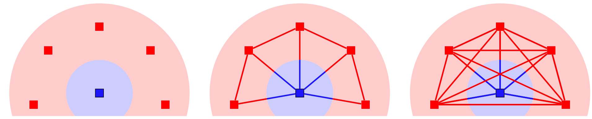
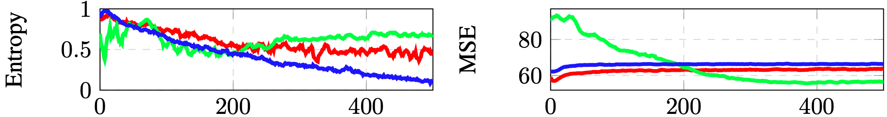
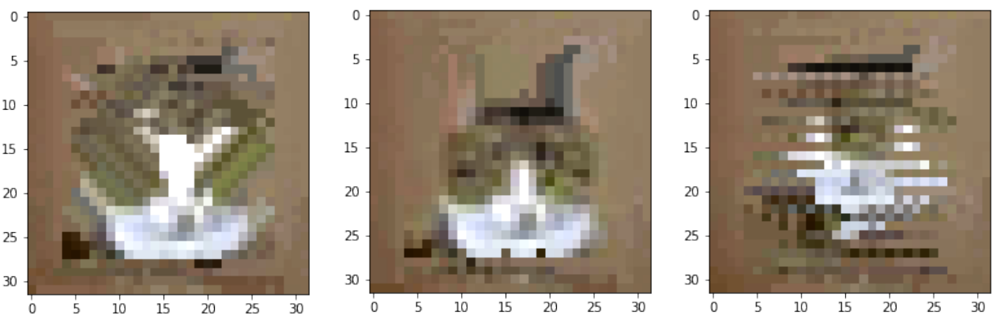
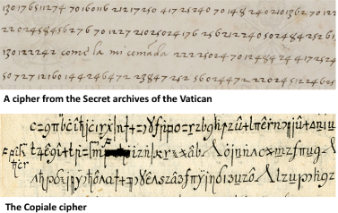

|
Raphael Baena Email / Scholar / Twitter / Github I am a postdoctoral researcher in computer vision at École des Ponts ParisTech (ENPC), under the guidance of Mathieu Aubry. I am part of the Imagine group of the A3SI team, LIGM lab (UMR 8049). I completed my PhD at IMT Atlantique IMT Atlantique under the direction of Vincent Gripon and supervision of Lucas Drumetz. I'm currently working on Handwriting Recognition and Optical Character Recognition for historical documents. During my Phd I've worked on transfer learning in classification settings. |

|
Research |
|
|
On Transfer in Classification: How Well do Subsets of Classes Generalize?
R. Baena, L. Drumetz, V. Gripon Conference EUSIPCO, 2024 Arxiv |
|  |
Local Mixup: Interpolation of closest input signals to prevent manifold intrusion
R. Baena, L. Drumetz, V. Gripon Journal Elsevier Signal Processing, 2024 Arxiv , Github |
|  |
Entropy based feature regularization to improve transferability of deep learning models
R. Baena, L. Drumetz, V. Gripon Conference ICASSP, 2023 Arxiv, Github |
|  |
Inferring Graph Signal Translations as Invariant Transformations for Classification Tasks
R. Baena, L. Drumetz, V. Gripon Conference EUSIPCO, 2021 Arxiv |
Teaching |
| Teaching Assistant in Machine Leaning | Course Supervisor: David Picard |
| ENPC | 2nd Semester 2024 |
|
Teaching Assistant in Advanced Algorithmics
and Graph Theory with Python |
Course Supervisor: Vincent Gripon |
| IMT Atlantique | 1st Semester 2022 |
| Supervision of Master's students for research Projects | Course Supervisor: Vincent Gripon |
| IMT Atlantique | 2nd Semester 2021 |
Reviewer Activity |
| ICASSP | Years: 2023-2024 |
| IEEE Transaction in Signal Processing (TSP) | Years: 2022-2023 |
Awards |
|  |
ICDAR 2024 Competition on Handwriting Recognition of Historical Ciphers
Task 2A - Borg and Task 3B - Ramanacoil Cipher R. Baena, S. Kalleli, M. Aubry
Text Recognition (HTR) in low resource scenarios is a challenging problem. This is particularly the case of historical encrypted manuscripts, so called ciphers. The cipher alphabets oftentimes include digits, Latin or Greek letters, Zodiac and alchemical signs combined with various diacritics, as well as invented symbols.
|
|
Website stolen from Jon Barrow. |